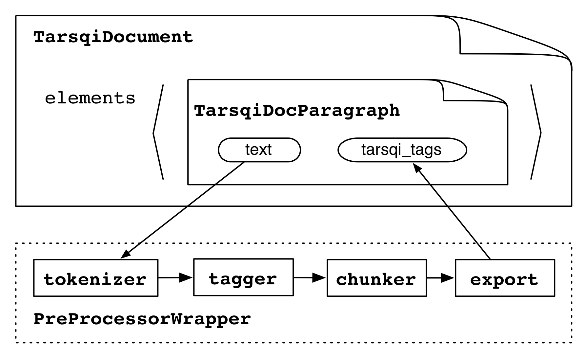

The standard Tarsqi preprocessor can be run in two ways:
$ python tarsqi.py --pipeline=PREPROCESSOR <INFILE> <OUTFILE> $ python tarsqi.py --pipeline=TOKENIZER,TAGGER,CHUNKER <INFILE> <OUTFILE>
In the first case, the PreprocessorWrapper is used, which wraps tokenizer, tagger and chunker and chunker all together. In the second case, the tokenizer, tagger and chunker are each wrapped individually. The second invocation allows some more flexibility. For example, we can now run TTK on input that was already tokenized, but not tagged and chunked. This is useful in case we want to adopt external tokenization. In addition, it is now easier to swap in different taggers if needed. We would just an additional tagger component and reference that one in the pipeline (some extra coding would be needed to write the wrapper of course). The default is to use the PREPROCESSOR.
The PreprocessorWrapper loops through the document elements by using the TarsqiDocument.elements() method, which returns a list of Tags of type "docelement" where each tag has pointers to the begin and end offset in the text. For each element, the wrapper extracts the source text, runs the tokenizer, tagger and chunker on that text and then exports the results back to the TarsqiDocElements.
The tokenizer gets a copy of a slice of the text from the TarsqiDocument (stored in the SourceDoc in the source instance variable) and it returns a list of pairs, where each pair is either ('<s>', None) for sentence boundaries or a pair of a string and a TokenizedLex instance, which has instance variables begin, end and text:
[('<s>', None),
(u'Fido', <components.preprocessing.tokenizer.TokenizedLex instance at 0x110844998>),
(u'barks', <components.preprocessing.tokenizer.TokenizedLex instance at 0x110844ab8>),
(u'.', <components.preprocessing.tokenizer.TokenizedLex instance at 0x110844b48>)]
Since the tokenizer runs in isolation on the text of an element, it assigns offsets starting at 0. The PreprocessorWrapper adjusts these so that the offsets point into the correct spot in the full text source of the document.
The tagger is then fed a vertical string consisting of the first element of all pairs (the s tag or a string):
<s> Fido barks .The tagger returns a list with as many elements as lines, where each element is either an s tag or a tab-separated triple of string, part-of-speech tag and lemma:
['<s>', 'Fido\tNP\tFido', 'barks\tVVZ\tbark', '.\tSENT\t.']
The PreprocessorWrapper then takes this list and merges it with the list of pairs that came out of the tokenizer and creates the following structure:
[[('Fido', 'NNP', 'Fido', 1, 5),
('barks', 'VBZ', 'bark', 6, 11),
('.', '.', '.', 11, 12)]]
Note that the s tags have disappeared and that instead we now have a list of sublists, with one sublist for each sentence. Another thing that happens at this transformation stage is some normalization of tag names. The chunker adds ng and vg tags to the sublists.
[['<ng>', ('Fido', 'NNP', 'Fido', 1, 5), '</ng>',
'<vg>', ('barks', 'VBZ', 'bark', 6, 11), '</vg>',
('.', '.', '.', 11, 12)]]
Finally, the information in this data structure is exported to the TagRepository in the tags instance variable on the TarsqiDocument and with the above input the preprocessor will append s, ng, vg and lex tags to the tags list and eventually set it to:
[ <Tag docelement id=d1 0:13 {'type': paragraph'}>,
<Tag lex id=l1 1:5 {'lemma': 'Fido', 'pos': 'NNP'}>,
<Tag ng id=c1 1:5 {}>,
<Tag lex id=l2 6:11 {'lemma': 'bark', 'pos': 'VBZ'}>,
<Tag vg id=c2 6:11 {}>,
<Tag lex id=l3 11:12 {'lemma': '.', 'pos': '.'}>,
<Tag s id=s1 1:12 {}> ]
Notice that the tags are added by a depth-first post-order traversal of the tree, but this is an accidental feature of the algorithm and in no way a requirement on the order of the tags. When this tags list is built the preprocessor uses the index() method on the TagRepository to create the opening_tags and closing_tags dictionaries, which will look as follows:
{ 0: [ <Tag docelement id=d1 0:13 {'type': paragraph'}>,
1: [ <Tag s id=s1 1:12 {}>,
<Tag lex id=l1 1:5 {'lemma': 'Fido', 'pos': 'NNP'}>,
<Tag ng id=c1 1:5 {}> ],
6: [ <Tag lex id=l2 6:11 {'lemma': 'bark', 'pos': 'VBZ'}>,
<Tag vg id=c2 6:11 {}> ],
11: [ <Tag lex id=l3 11:12 {'lemma': '.', 'pos': '.'}> ] }
{ 5: { 1: {'lex': True, 'ng': True}}
11: { 6: {'lex': True, 'vg': True}},
12: { 1: {'s': True},
11: {'lex': True}},
13: { 0: {'docelement': True}}}
These dictionaries can be used for quick access based on character offsets.